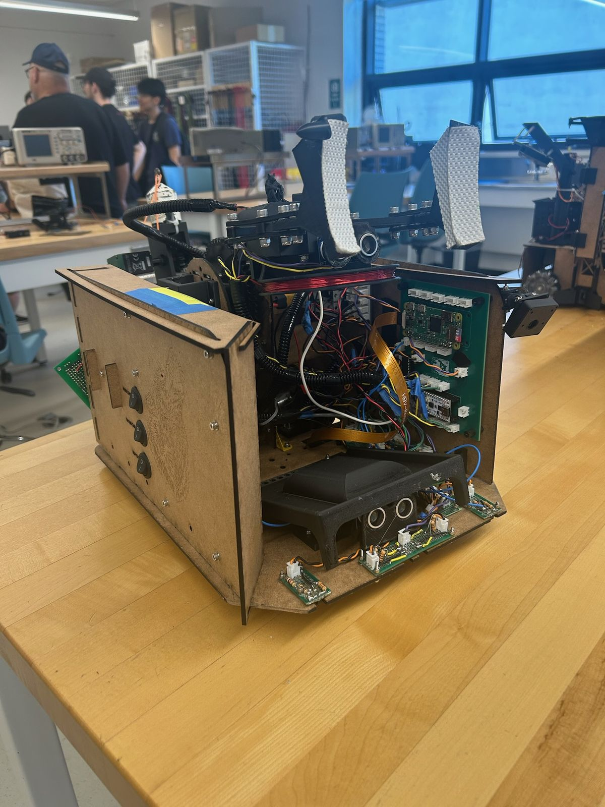
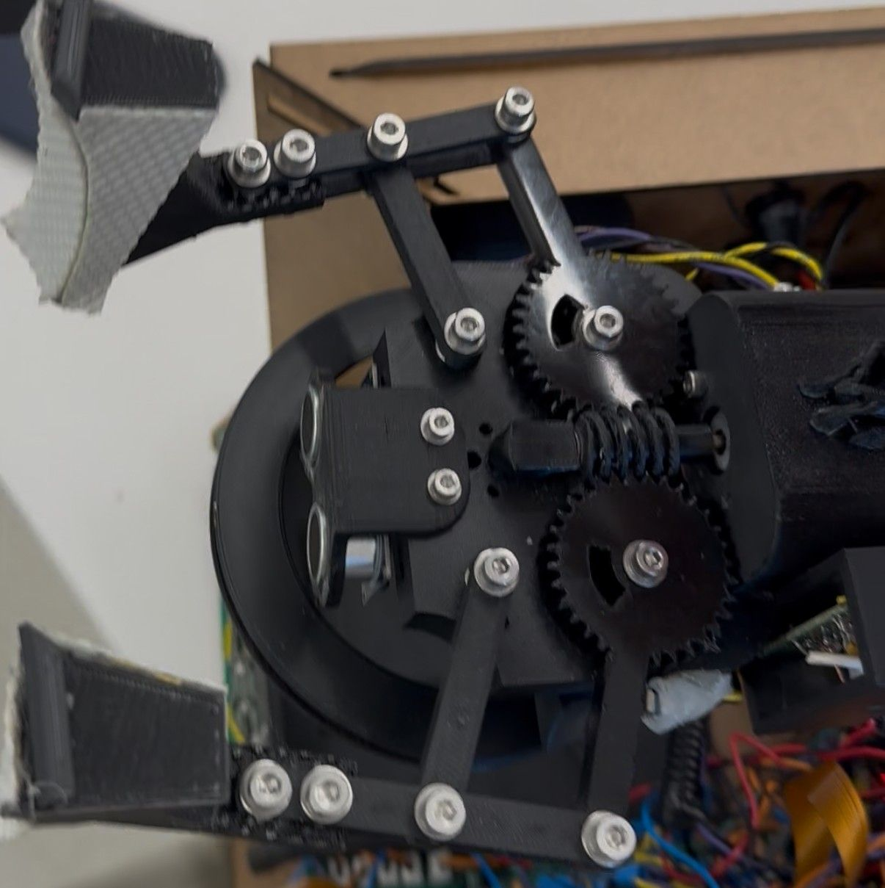
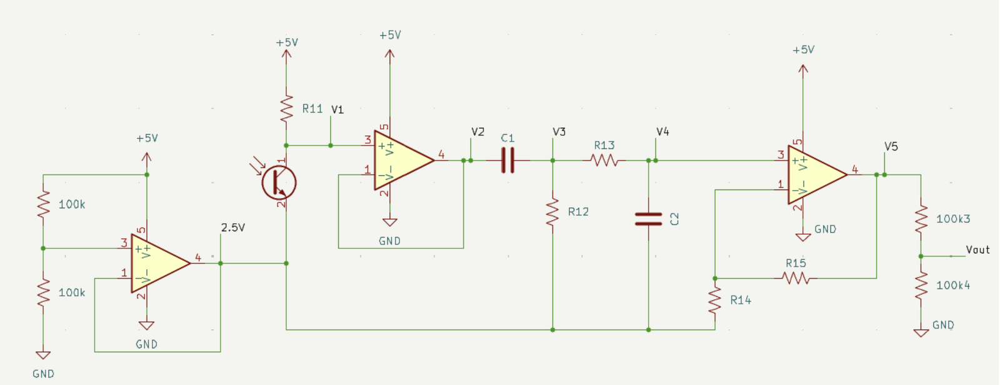
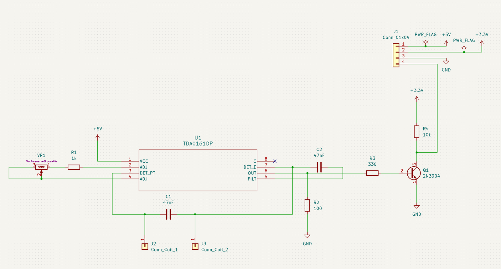
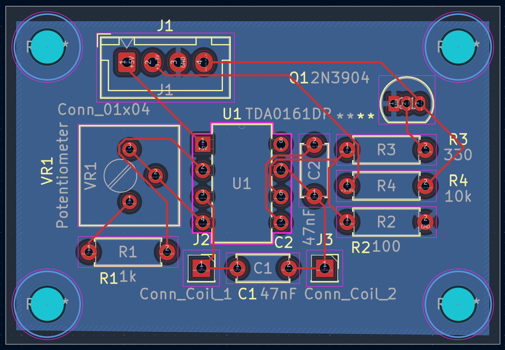
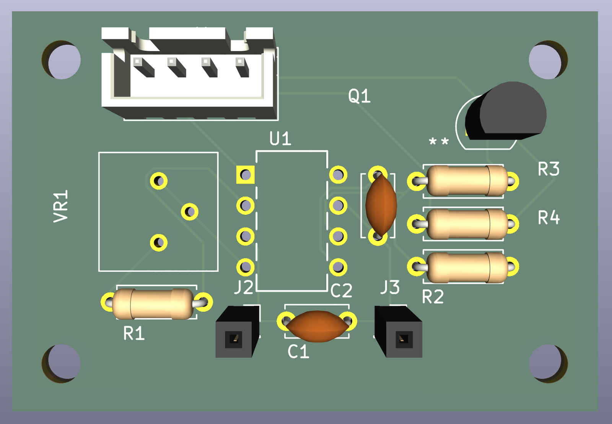
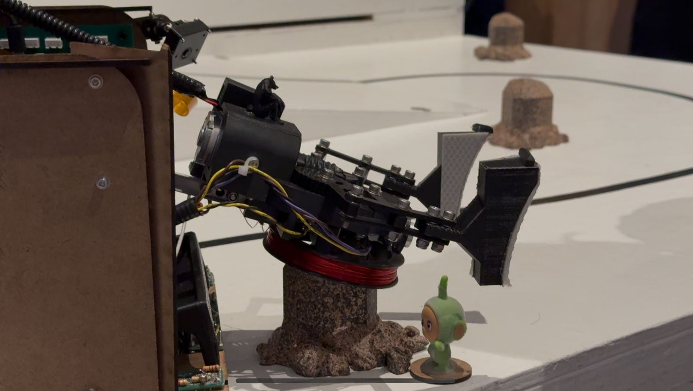
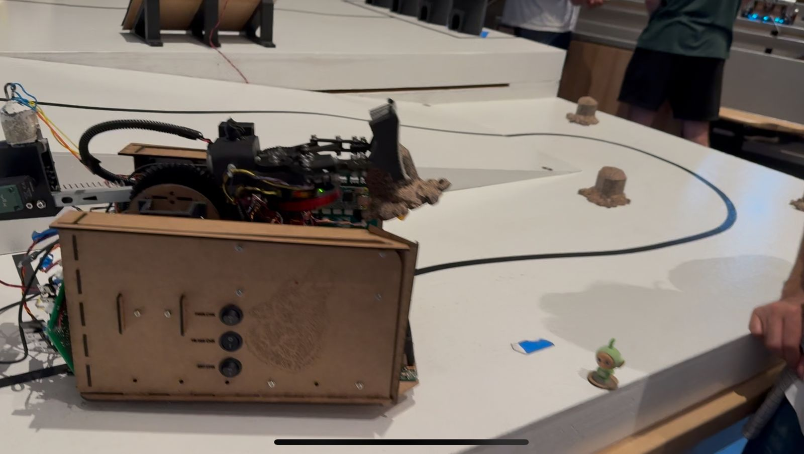

Autonomous competition robot
In UBC’s ENPH 253 robotics design course, my team designed and built a fully autonomous robot over the summer. On competition day it had to follow a taped course, climb an incline, leave the track to pick up rocks with a claw, check them for metal, and find the line again.
- Course
- ENPH 253, robotics design project
- Dates
- May to August 2026
- My work
- Drivetrain and claw design, wheel-encoder filtering, metal detector schematic and PCB, wiring and integration
- Tools
- Onshape, KiCad, ESP32, C++, 3D printing, laser cutting, oscilloscope
What it did
- Followed the full taped course at 15 cm/s, including a 7° incline
- Left the track to retrieve rocks with its claw, then found the line again and continued
- Checked each rock for metal with a coil detector built into the claw
- Ran a vision model for target detection, trained on 300+ photos (80% accuracy), on a Raspberry Pi Zero W
The robot
We modelled the full assembly in Onshape and built the chassis from laser-cut panels. The team built H-bridge motor drivers and wrote C++ firmware on ESP32 microcontrollers: a state machine for the course, PID line following, and sonar and optical sensing. To read more sensors than the microcontroller had pins for, we added an external ADC on the SPI bus.

Claw and gripper
I designed the claw around a worm gear driving a four-bar linkage. The 1:25 worm drive gives the claw plenty of closing torque, and because a worm gear can’t be back-driven, the claw holds its grip without the motor holding it. The main structure is PLA and acetal, to keep it rigid without adding weight at the end of the arm. A forward-facing sonar sensor measures the distance to the rock, and a metal-detecting coil sits in the base of the claw, around the rock.

- Problem
- The 3D-printed worm gear often jammed, especially at the fully open and fully closed positions.
- Cause
- The printed worm gear was coarse and expanded slightly from the heat of printing, so the real tolerances were tighter than in CAD and the gears didn’t mesh smoothly. At the ends of travel, the motor also kept driving at a high PWM duty cycle, forcing loose arm parts into a jam that it didn’t have the torque to back out of.
- Fix
- We redesigned the worm gear with much looser tolerances and added lithium grease. That added some play to the claw, but we chose reliability over precision. It still jammed when fully open, so we added a limit switch at the half-open position, which was the best stopping point mechanically. That ended the jamming.
Filtering the wheel encoders
The wheel encoders tell the robot how far each wheel has turned, so they need to give clean pulses.
- Problem
- On the oscilloscope, the encoder output was extremely noisy even when we turned the wheel by hand, so we couldn’t track wheel position.
- Cause
- The encoders are mechanical switches, and their contacts bounce at high frequency every time they open or close. The wheels never spin fast, so the real signal is low frequency and the bounce could be filtered out.
- Fix
- I designed a circuit that passes the signal through an RC low-pass filter, then a Schmitt trigger and an amplifier. It turned the bouncing signal into clean square waves.

Metal detector PCB
The metal detector is built around a TDA0161 proximity-detector chip and a coil. When metal comes near the coil, the oscillation changes and the circuit flags it.
- Problem
- On a breadboard and then a protoboard, the circuit wouldn’t work reliably. It only oscillates properly with the right coil inductance and capacitance.
- Cause
- Our coil was too large and had too much inductance, and the breadboard and protoboard connections were unreliable.
- Fix
- We worked out suitable capacitor values and the number of coil turns, and I drew the schematic in KiCad and laid out a PCB so the connections would be solid.




